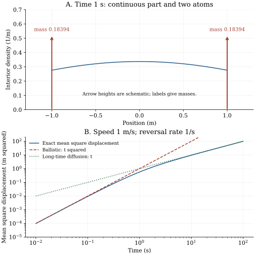

Chapter 19 · Lecture 22
Finite-speed motion and the telegraph equation
A particle can travel at most one meter in one second. A Gaussian diffusion kernel assigns some probability to every distance, however short the observation time. The discrepancy is consequential for early arrivals at a distant target. A velocity that reverses randomly, while retaining a fixed speed between reversals, provides an exactly soluble model with both a finite propagation front and a diffusive long-time center.
The sequence follows lecture 22: Poisson count covariance, a persistent lattice limit, coupled velocity states, second-order initial data, the mixed propagator, mean square displacement, diffusion scaling, and a crossing question. Its full caption track was read. One timed frame at 2995 seconds was inspected: front geometry is visible, while the detailed Bessel coefficients remain partly occluded. The derivation below checks those coefficients independently. No continuous audiovisual review is claimed.
19.1 Position retains an unobserved direction L22 0:46
Let $N(t)$ count events of a homogeneous Poisson process of rate $\nu\gt0$, in inverse seconds, after time zero. Let the initial velocity $V(0)$ equal $+v_c$ or $-v_c$ with probability one half each, independently of $N$, where $v_c\gt0$ has units of speed. Set $V(t)=V(0)(-1)^{N(t)}$ and $X(t)=\int_0^tV(s)\,ds$, starting at the origin. Each event reverses direction. The sample path of $X$ is continuous and piecewise linear, with slopes restricted to these two values; its velocity jumps at reversal times.
Immediately $|X(t)|\leq v_ct$ for every path. The same bound applies to displacement over any time interval. The state $(X,V)$ is Markov: future Poisson increments are independent of the past and its present velocity determines the next displacement. Position alone generally fails this property. Two histories ending at the same position but moving in opposite directions predict different next short-time displacements. Retaining direction is a physical state enlargement, not a numerical correction to a Gaussian density.
Two related covariance identities should not be confused. Independent increments give $\operatorname{Cov}(N(s),N(t))=\nu\min(s,t)$: for $s\leq t$, split $N(t)=N(s)+[N(t)-N(s)]$ and use the Poisson variance of $N(s)$. The count is not stationary. By contrast, stationarity of the symmetric two-state velocity and the Poisson generating function give $\mathbb E[V(s)V(t)]=v_c^2\mathbb E[(-1)^{N(|t-s|)}]=v_c^2e^{-2\nu|t-s|}$. The mean time between reversals is $1/\nu$; the velocity correlation time is $1/(2\nu)$. They differ by a factor two because both an even and an odd number of switches affect the sign correlation.
19.2 The missing state becomes a second initial condition L22 19:14
Let $\rho_+(x,t)$ and $\rho_-(x,t)$ denote position probability densities in the positive and negative velocity states, understood as distributions when there are atoms. Their sum $\rho=\rho_++\rho_-$ is the position law. Their difference determines the probability current $j=v_c(\rho_+-\rho_-)$, with units of inverse seconds in one spatial dimension.
During an interval $dt$, a positive-velocity path translates by $v_cdt$ and retains its state with probability $1-\nu dt+o(dt)$. Paths from the negative state enter with probability $\nu dt+o(dt)$. Taylor expansion of the gain and retention terms gives the first equation; reversing the advection sign gives the second. Adding them cancels switching and gives probability conservation. Subtracting them and multiplying by $v_c$ gives the current equation. Differentiate conservation with respect to time and substitute the spatial derivative of the current equation to obtain (19.2). ∎
A persistent lattice walk supplies the same scaling. Let a time step be $h$, spacing $\ell$, and reversal probability $\beta$. The positive state at site $q$ after a step receives probability $(1-\beta)$ from the positive state at $q-1$ and $\beta$ from the negative state there. Take $\ell/h\to v_c$ and $\beta/h\to\nu$ as $h\to0$. First-order Taylor terms produce (19.1). This is a finite-speed scaling; holding $\ell^2/(2h)$ fixed would instead be the different Brownian scaling of chapter 3.
The symmetric preparation has $\rho_\pm(x,0)=\delta(x)/2$. The first-order equations then require $\partial_t\rho_+(x,0)=-v_c\delta'(x)/2$ and $\partial_t\rho_-(x,0)=+v_c\delta'(x)/2$, so $\rho(x,0)=\delta(x)$ and $\partial_t\rho(x,0)=0$. Here $\delta'$ acts on a smooth test function $g$ by $\int\delta'(x)g(x)\,dx=-g'(0)$. No square of a delta is involved. All three densities satisfy the same second-order differential equation, but their derivative data differ. Specifying only the initial position law loses this information.
If the initial positive-velocity probability is $b\in[0,1]$, the same position delta is accompanied by $\partial_t\rho(x,0)=-(2b-1)v_c\delta'(x)$. The resulting mean displacement is $(2b-1)v_c(1-e^{-2\nu t})/(2\nu)$. The initial velocity bias decays, but its accumulated positional shift remains. A second-order scalar equation with arbitrary initial derivative also need not represent a positive probability law; the underlying nonnegative two-state initial data constrain which solutions have this interpretation.
19.3 A probability density alone omits the ballistic atoms L22 44:33
The probability of no reversal before $t$ is $e^{-\nu t}$. Half of these paths are at $+v_ct$, and half at $-v_ct$. They form atoms: positive probability at individual points. Paths with at least one reversal supply an interior continuous law. Define $r=\sqrt{v_c^2t^2-x^2}$ for $|x|\lt v_ct$. For nonnegative argument $z$, the modified Bessel functions needed here can be defined by the convergent series $I_0(z)=\sum_{m\geq0}(z/2)^{2m}/(m!)^2$ and $I_1(z)=\sum_{m\geq0}(z/2)^{2m+1}/[m!(m+1)!]$. These are the integer-order cases of NIST DLMF 10.25.2.
Condition on $N(t)=n$. Its event times are the order statistics of $n$ uniform samples on $(0,t)$, so the $n+1$ fractions of time between successive events are uniformly distributed on the simplex of nonnegative fractions summing to one. To see the resulting grouping law, let $a$ of these intervals carry positive velocity and $b$ carry negative velocity. The volume of the simplex slice where their positive sum is $y$ is proportional to $y^{a-1}(1-y)^{b-1}$. Normalization gives the beta density $\Gamma(a+b)y^{a-1}(1-y)^{b-1}/[\Gamma(a)\Gamma(b)]$ on $(0,1)$.
The displacement is $x=v_ct(2y-1)$, with Jacobian $dy/dx=1/(2v_ct)$. For $n=2m+1$ reversals there are $m+1$ intervals of each sign, regardless of the initial sign. Multiply the beta density with parameters $(m+1,m+1)$ by the Poisson probability $e^{-\nu t}(\nu t)^{2m+1}/(2m+1)!$ and the Jacobian. Since $y(1-y)=r^2/(4v_c^2t^2)$, summing these odd-switch contributions gives $\nu e^{-\nu t}I_0(\nu r/v_c)/(2v_c)$.
For $n=2m$ with $m\geq1$, the equally weighted initial signs give the mixture of beta densities with parameters $(m+1,m)$ and $(m,m+1)$. The factors proportional to $y$ and $1-y$ add to one. Its density is $(2m)! [y(1-y)]^{m-1}/[2m!(m-1)!]$. Multiplication by the even Poisson probability and the same Jacobian, followed by the substitution above, sums to the $I_1$ term in (19.3). The excluded $n=0$ contribution gives exactly the two atoms. The construction conditions on mutually exclusive events with total probability one, so it establishes normalization and positivity as well as the formula. ∎
The apparent interior factor $I_1(\nu r/v_c)/r$ has a finite boundary limit, since $I_1(z)=z/2+O(z^3)$. It does not represent the front atom. Integrating the finite interior density over a shrinking neighborhood of a front tends to zero; the separate atomic probability remains. At $\nu t=1$, the continuous mass is $1-e^{-1}=0.63212056$, while each atom has mass 0.18393972. Renormalizing an interior-only histogram to unit area would therefore discard more than one third of the law and inflate its displayed density.
19.4 One covariance gives both transport scales L22 50:51
Let $M_2(t)=\mathbb E[X(t)^2]$ for the symmetric preparation. Because the mean is zero, it is also the centered variance. The double integral of velocity covariance is simpler than taking moments of Bessel functions. Stationarity gives $M_2(t)=\int_0^t\int_0^tv_c^2e^{-2\nu|s-u|}\,ds\,du=2v_c^2\int_0^t(t-u)e^{-2\nu u}\,du$.
Differentiate the covariance integral: $M_2'(t)=v_c^2(1-e^{-2\nu t})/\nu$. Integrating from zero proves (19.4). Expanding the exponential cancels the constant and linear terms inside the bracket and leaves $v_c^2t^2$ at leading order. At long times the exponential vanishes, giving linear growth with slope $v_c^2/\nu$. Alternatively multiplying (19.2) by $x^2$ and integrating distributionally gives $M_2''+2\nu M_2'=2v_c^2$, with $M_2(0)=M_2'(0)=0$, yielding the same result. ∎
The speed remains finite at every time even when the mean square displacement is linear. Long-time diffusion means cancellation of many alternating flight segments; it does not mean the microscopic trajectories become Brownian without a scaling limit. For $v_c=1$ meter per second and $\nu=1$ per second, the exact values at times 0.1, one, and five seconds are 0.00936538, 0.56766764, and 4.50002270 square meters. At one second neither the ballistic prediction one nor the long-time prediction one is accurate: the complete crossover is needed.
19.5 A diffusion limit suppresses the velocity relaxation scale L22 40:36
Define the characteristic function $\phi(k,t)=\mathbb E[e^{ikX(t)}]$, with $k$ in inverse meters. Fourier transformation of the telegraph equation gives $\partial_{tt}\phi+2\nu\partial_t\phi+v_c^2k^2\phi=0$, with $\phi(k,0)=1$ and $\partial_t\phi(k,0)=0$. Its characteristic roots are $-\nu\pm\sqrt{\nu^2-v_c^2k^2}$. When $v_c,\nu\to\infty$ while $v_c^2/(2\nu)=D$ stays fixed and positive, the slow root tends to $-Dk^2$ and the fast root tends to minus infinity. The coefficient of the slow exponential tends to one. Thus at every fixed positive time and fixed $k$, $\phi(k,t)\to e^{-Dk^2t}$.
Continuity of the limiting characteristic function establishes convergence in distribution at each fixed time to the Gaussian of variance $2Dt$. This argument does not by itself prove path-space convergence; that would require tightness and joint-time control. It does explain the disappearance of the atoms: their total mass $e^{-\nu t}$ vanishes while their front positions $\pm v_ct$ recede. At fixed parameters a separate long-time central scaling also leads to a Gaussian core, but a Gaussian approximation to that core still misses finite-speed support and rare no-switch flights. Deleting $\partial_{tt}\rho$ in (19.2) is a useful slow-scale approximation, not an identity valid near time zero.
19.6 Computational laboratory: preserve atoms and event times
The executable laboratory independently integrates the interior Bessel density, adds both front masses, and checks normalization and second moments at three times. It then draws 100,000 paths at each time with seed 2026110822. Given the Poisson switch count, it sorts uniform event times and sums actual signed flight durations. This simulation does not discretize switching or interpolate a Brownian path, and it does not sample the beta mixture used in the analytical proof. The speed is one meter per second and the switching rate one per second.
t=0.1: interior=0.09516258; atoms=0.90483742; MSD=0.00936538; sample=0.00937464 t=1: interior=0.63212056; atoms=0.36787944; MSD=0.56766764; sample=0.56775016 t=5: interior=0.99326205; atoms=0.00673795; MSD=4.50002270; sample=4.47136628
The tests compare the quadrature normalization and moment with exact values to numerical tolerance, and compare Monte Carlo values using broad sampling tolerances. They test an implementation of the model, not its validity for a particular material. The program writes data and output beside the source; it has no network effect. For much larger switching rates or times, unscaled Bessel evaluation can overflow, and arrays containing all event times can become expensive. Scaled Bessel functions and chunked event generation would be appropriate production extensions.

For short times, evaluating $1-e^{-2\nu t}$ by subtraction loses precision. The function expm1 computes $e^x-1$ accurately near zero. The following snippet returns (19.4) for ordinary positive times and a leading series for extremely small dimensionless times:
import math
def telegraph_msd(time, speed, rate):
if time < 0 or speed <= 0 or rate <= 0:
raise ValueError("require time >= 0 and positive speed, rate")
if rate*time < 1e-5:
return speed**2*time**2*(1-2*rate*time/3)
return speed**2/rate*(time+math.expm1(-2*rate*time)/(2*rate))
print(f"{telegraph_msd(1.0, 1.0, 1.0):.8f}")It prints 0.56766764. Its tiny-time branch is a truncated expansion with relative error of order $(\nu t)^2$; the full laboratory works at larger times and uses the exact exponential expression. Run the lab and figure generator in that order with the declared packages.
19.7 Boundaries of the finite-speed model
A constant speed with independent exponential reversal times idealizes a persistent moving object. It excludes speed variation, acceleration dynamics, unequal reversal rates, directional persistence with nonexponential flight durations, and interactions. Position is not a Markov variable merely because its density satisfies a local second-order equation. The full mixed law and its initial derivative condition carry the omitted velocity information.
For a positive target distance, no telegraph path can arrive before distance divided by $v_c$. Brownian first passage has a very small but nonzero density at every positive time. Thus an approximation that succeeds for the central propagator can fail for an early-arrival question. At a regular interior threshold the instantaneous mean crossing rate uses the state-resolved flux $v_c[\rho_+(a,t)+\rho_-(a,t)]$; a first arrival is different because later crossings must be excluded. Chapter 20 treats that stopping-time distinction and the role of absorbing boundaries.
19.8 Exercises with worked solutions
Exercise 19.1 — Same position, different future (conceptual)
Two ensembles have initial position zero, but one starts with velocity $+v_c$ and the other with $-v_c$. Why is the same initial position density insufficient? State the two initial time derivatives.
Worked solution
The first ensemble moves initially right except on an event of probability $O(dt)$; the second moves initially left. Their scalar densities both start at $\delta(x)$, while conservation gives $\partial_t\rho(x,0)=-\partial_xj(x,0)$. Initial currents are $+v_c\delta(x)$ and $-v_c\delta(x)$, respectively. Their derivatives are therefore $-v_c\delta'(x)$ and $+v_c\delta'(x)$. The second-order equation needs both pieces of data. Observing the recent path reveals a direction that the present position alone omits.
Exercise 19.2 — A missing mass in a histogram (conceptual)
At $\nu t=1$, an interior density is plotted and normalized to area one. What fraction of the actual probability has been omitted, and by what factor has the interior been exaggerated?
Worked solution
The omitted zero-switch event has probability $e^{-1}=0.36787944$, split equally between the fronts. The correct interior area is $1-e^{-1}=0.63212056$. Renormalizing it multiplies every interior density by $1/(1-e^{-1})\approx1.58197671$. A histogram may combine an atom and a neighboring density contribution in a boundary bin; changing that bin's width changes its height. Atomic masses should be stated separately, so a bin height is not mistaken for a continuous density value.
Exercise 19.3 — Derive the moment equation (derive)
Starting from the first-order state equations, derive a closed evolution for $M_2(t)$ without integrating the Bessel propagator. Work with the symmetric initial state.
Worked solution
The backward generator applied to a smooth observable $g(x,v)$ is $\mathcal Lg=v\partial_xg+\nu[g(x,-v)-g(x,v)]$. For $g=x^2$, it gives $\mathcal Lg=2xv$, so $M_2'=2\mathbb E[XV]$. For $g=xv$, the drift term is $v^2=v_c^2$ and a reversal changes $xv$ to $-xv$, giving $(\mathbb E[XV])'=v_c^2-2\nu\mathbb E[XV]$. Hence $M_2''+2\nu M_2'=2v_c^2$, with both initial values zero. Integrating the first-order equation for $M_2'$ gives $M_2'=v_c^2(1-e^{-2\nu t})/\nu$, then (19.4). This avoids boundary errors from treating front atoms as a smooth density.
Exercise 19.4 — Rare reversals produce a uniform interior (derive)
Condition on exactly one reversal before $t$. Derive its position density and recover the leading interior term of (19.3) as $\nu t\downarrow0$.
Worked solution
The single reversal time $S$ is uniform on $(0,t)$. Starting right gives $X=v_cS-v_c(t-S)=v_c(2S-t)$, uniform on $(-v_ct,v_ct)$ with density $1/(2v_ct)$. Starting left reflects that same uniform law. Exactly one reversal has probability $\nu te^{-\nu t}$, so its unconditional interior contribution is $\nu e^{-\nu t}/(2v_c)$. In (19.3), $I_0(z)=1+O(z^2)$ and the $I_1$ term is of higher switch order, recovering this term. Its integrated mass is $\nu te^{-\nu t}$; the leading endpoint mass $e^{-\nu t}$ must still be retained.
Exercise 19.5 — Quantify a long-time approximation (compute/design)
For $v_c=\nu=1$ in consistent SI units, find the smallest time at which the relative error of replacing exact $M_2(t)$ by $t$ is below five percent. Define relative error with the approximation in the denominator. Give a conservative simple answer without root finding.
Worked solution
The specified relative error is $[t-M_2(t)]/t=(1-e^{-2t})/(2t)$. It is strictly decreasing for positive $t$: its derivative has numerator $(2t+1)e^{-2t}-1\lt0$, since $e^{2t}\gt1+2t$. The exact crossing solves $(1-e^{-2t})/(2t)=0.05$ and lies just below ten seconds. Thus ten seconds is a conservative simple choice: the error is $(1-e^{-20})/20\lt0.05$. There is no smallest time with a strict inequality; the set is the open interval above that unique crossing. Changing the denominator to the exact value changes the threshold, illustrating why the error convention must accompany a quoted percentage.
Exercise 19.6 — Test a diffusion model for early arrivals (compute/design)
A target is two meters away, $v_c=1$ meter per second, and $\nu=1$ per second. Can matching the long-time diffusion coefficient justify predicted arrivals before one second? Design a numerical comparison that does not miss telegraph reversals.
Worked solution
The telegraph arrival probability before any $t\lt2$ seconds is exactly zero by the pathwise speed bound. Its effective diffusion coefficient is $D=0.5$ square meters per second, but a Brownian model with that coefficient has nonzero first-arrival probability at every positive time. Long-time variance matching cannot justify this early tail. Simulate exponential reversal gaps and integrate each linear segment until its endpoint or target crossing, recording a crossing inside a segment exactly. Compare with the Brownian image-method distribution developed in chapter 20 rather than relying on a time-grid crossing counter. This comparison isolates model error from the separate numerical error caused by missed between-sample crossings.
19.9 Sources and attribution
- V. Balakrishnan, IIT Madras, lecture 22, NPTEL 115106089: persistent lattice model, telegraph equations, mixed propagator, crossover, diffusion limit, and crossing motivation.
- NIST, DLMF 10.25.2: modified-Bessel series used to name the independently derived switch-count mixture.
The switch-count proof, exact-event laboratory, original figure, and worked solutions are additions. Density and atoms are always distinct measures; the diffusion claim proved here is fixed-time distributional convergence. A theorem about every possible correlated or finite-speed transport process is not inferred.